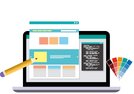

Kalpana Natarajan
8 years of professional IT experience in end to end software development from Requirement Gathering, Systems Design, Development, Testing, Integration and Implementation of web based and Client Server (Desktop) N-tier architecture.
Expertise

Web Designing
Passionate about designing and referred as a good UI designer.
.Net C#
Having good exposure on .Net developement using C#

Database
Good in database knowledge with Sql server management studio
My Project Work
Project #1: CUNA Mutual AEA T&M Projects
| Client |
CUNA Mutual Group |
| Role |
Senior Software Engineer |
| Organization |
Syntel International Private Limited |
| Duration |
Sep/2018 — Till now |
| Team Size |
5 |
| Environment (with skill versions) |
| Skills Used |
.Net, MVC, Sql Server, SSIS, SSRS |
| Tools |
SQL Server Management Studio, VS 2017 |
| O/S |
Windows 7 Enterprise |
|
Project Description:
Cuna Mutual Group is a collection of Credit Unions organization in US government.
Roles and Responsibilities:
- Analysis of existing SSIS and SSRS Solution on Impact of Database Upgradation and given solution for tables and procedures impacted.
- Created a Visual Studio Program on business requirement for Converting the JSON input file with validation of JSON schema and generating 2 XML output files generated with the JSON input and log file along with.
Project #2: DTNA-SCS-DTR
| Client |
Daimler |
| Role |
Senior Software Engineer |
| Organization |
Syntel International Private Limited |
| Duration |
Sep/2017 — Aug /2018 |
| Team Size |
5 |
| Environment (with skill versions) |
| Skills Used |
.Net, MVC, Sql Server |
| Tools |
SQL Server Management Studio, RTC |
| O/S |
Windows 7 Enterprise |
|
Project Description:
- Automobile project for Daimler Trucks
- Basically, North America Project, deals with client Daimler who is the manufacturer of Trucks.
- Daimler deals with client for sale and contract of new trucks and used trucks.
Roles and Responsibilities:
- Enhancement of the functionalities which is already designed.
- Fixing the defects on UI page and functionalities.
- Designing new UI page which will add more functionalities to the existing system.
- Writing Unit test cases and testing all possible scenarios.
Project #3: VST – Bridge
| Client |
Oceanwide |
| Role |
Implementation Coordinator |
| Organization |
Syntel International Private Limited |
| Duration |
Apr/2016 — Aug/2017 |
| Team Size |
9 |
| Environment (with skill versions) |
| Skills Used |
.Net, Sql Server |
| Tools |
SQL Server Management Studio, HP ALM, RD Web Server |
| O/S |
Windows 7 Enterprise |
|
Project Description:
- Insurance Product called Bridge.
- Bridge lets you quickly and easily design online solutions for your agents, brokers, cover-holders & direct assureds that will allow them to obtain instant quotes, bind coverage and generate all required policy documentation.
- Every submission is validated against your underwriting rules and exceptions are filtered out for manual underwriting.
Roles and Responsibilities:
- Designing and configuring the product using Bridge.
- Creating Fields, Option, Panels and Screens for the application form and use Workflows to publish it.
- Create Products, Premium Types, & Clauses.
- Create Triggers for each business rule condition.
- Select Master Covers, create one for each distribution channel, and specify the Rates, Data Validations, Limits, Deductibles, Insuring Conditions, Documents, Taxes and other information.
- Set the Master Cover to Test and create new submissions to test your configuration.
Project #4: SDM Global Acquisitions
| Client |
AMEX |
| Role |
Production Support Engineer |
| Organization |
Syntel International Private Limited |
| Duration |
Mar/2014 — Apr/2016 |
| Team Size |
7 |
| Environment (with skill versions) |
| Skills Used |
Asp.Net, C#, SQL server |
| Tools |
Microsoft visual studio, Sql Server, SSIS, SSRS, SQL Server Management Studio, BIDS, Control - M |
| O/S |
Windows 7 Enterprise |
|
Project Description:
- This is basically a production support project. Project consists of 4 modules named as Dialer MIS, Opera, Voice MIS, and Dialer 7.2 up gradation.
- The work flow is completely depending on Ticket/IMR system.
- Real time business requires many reports like CCP Performance, IDN feed files.
- Supporting of all these applications is the job nature.
Roles and Responsibilities:
- Efficiently handle multiple source system and multiple subject area to fix the production issues within a short span of time as it was critical for client along with last moment changes from client side.
- Provide on-call support regarding production system.
- Address data-related problems in regards to systems integration, compatibility, and multiple -platform integration.
- Work with system supporters, developers and DBAs in automating.
- Monitoring and Running the jobs in SQL Server Agent jobs. Scheduling the jobs by holding, running and triggering etc. in Control-M and SQL Server Agent jobs.
- Maintaining Quality Standards as per the Company & Clients policy.
- Documenting as per the standards to ensure in compliance with the Internal and External Audits.
- Maintaining the documents in common repository.
- Provide technical guidance as needed for the following: Tech Inquiries, Test issues, Production issues.
- Provide consultation support for Impact Requests.
- Provide Knowledge transfer to team members.
Project #5: Joyce Provider (PFP)
| Client |
HUMANA |
| Role |
Developer |
| Organization |
Syntel International Private Limited |
| Duration |
June/2012 – Mar/2014 |
| Team Size |
4 |
| Environment (with skill versions) |
| Skills Used |
ASP.Net, C#, SQL Server 2008 |
| Tools |
Microsoft Visual Studio 2008, SQL Server Management Studio |
| O/S |
Windows XP/ 7 |
|
Project Description:
- The rating of the physician also available in the same page, which is mentioned according to the performance of the physician.
- Physician finder plus is the application which helps to user to find the physician for the particular country, particular diagnosis in particular county.
- I was working as software developer in this project. Daily client interaction, analysis, coding, testing are key responsibilities
Roles and Responsibilities:
- Understanding the requirement.
- Developing WCF Service for PFP with TDD.
- Designing and developing Web Forms and (MVC 3.0 controller’s coding i.e. code behind for Physician Finder Plus i.e. PFP) with Entity Framework and C# 4.0 as code behind language with Unit Test Case Project.
- Developing Business Layer Objects and Unit testing.
- Maintaining Database (Stored Procedure’s and Tables).
- Creating /updating Unit Test Case project and Documents for Application / Database.
- Creating Test Case Documents for Application / Database.
- Creating Business Logic Documents for SP / Queries.
- Creating and Uploading Test Cases in SQUIDS and Shared Document.
- Using SQUIDS for raising /fixing defects.
- Create SQL Server Integration service (SSIS)/ETL packages
- Creating required documents like data dictionary, mapping documents, functional requirement
- Designing database in SQL Server 2005 (i.e. create store procedure, view-queries, Functions, Database design and maintenance).
mkalpananatarajan@gmail.com
+91 9789489175
Designed by Kalpana Natarajan